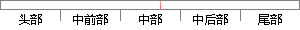

基本的生活保障是隐士能够持续隐居生活、坚守人格自由和独立的前提。
片段位置图

相似结果|
1
原句片段：基本的生活保障是隐士能够持续隐居生活、坚守人格自由和独立的前提。
相似片段 1：基本的生活保障是隐士坚守个体自由、独立人格的前提。秦汉隐士的生活经济来源以自耕自食、隐居教授为主,这跟他们自身素质有关,也与秦汉经济、文化发展紧密相连。与...
|
※ 片段修改建议 ※
近似词参考：- 基本：根基 根本
- 生活：糊口 生涯 生存
- 隐士：蓬菖人 山人
- 能够：可以或许
- 持续：延续 连续
- 生活：糊口 生涯 生存
- 坚守：苦守 服从
- 人格：品德
- 独立：自力
- 前提：条件
系统自动生成语句：根基的糊口保障是蓬菖人可以或许延续隐居糊口、苦守品德自由和自力的条件。
注：本片段修改建议为系统自动生成，仅供参考。